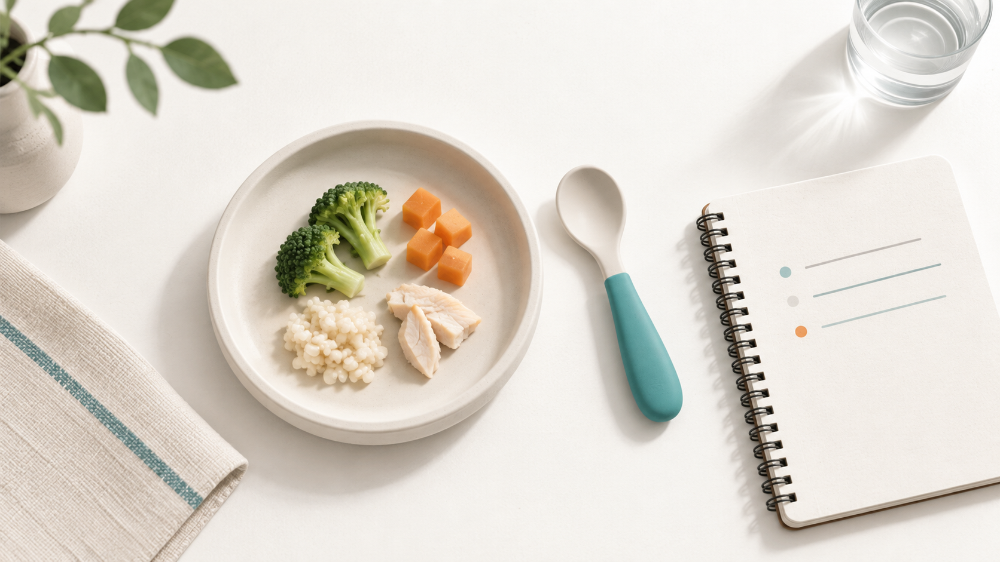
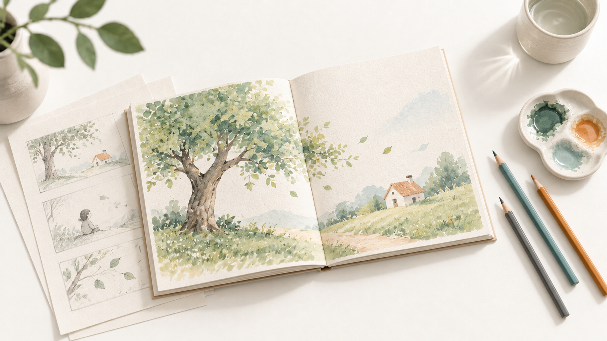
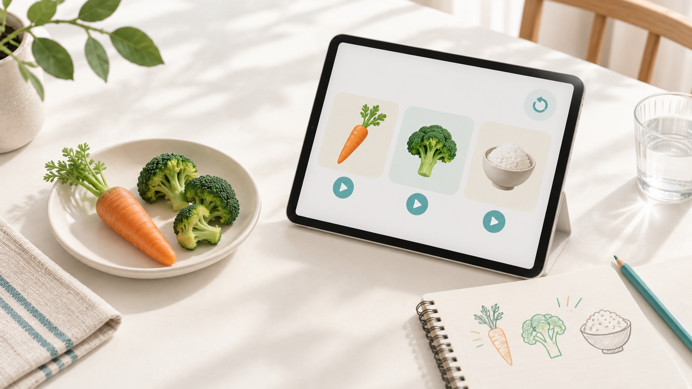

교육 자료
전문 콘텐츠
교육 현장에서 반복해서 만나는 질문과 주제를 정리합니다. 식생활교육, 부모교육, 평생교육, 교육콘텐츠·AI와 관련된 정보를 자료와 현장 경험을 바탕으로 기록합니다.

식생활교육
아이가 밥을 입에 물고 삼키지 않아요. 무엇부터 살펴봐야 할까요?
아이가 음식을 입에 오래 머금는다면 어떤 음식과 상황에서 그런지 살펴보세요. 가정에서 조정할 점과 상담이 필요한 신호를 정리했습니다.
자세히 보기 →
평생교육
성인 그림책 만들기, 한 권을 완성하며 무엇을 배울까요?
성인 그림책 창작 과정에서 나타난 학습자의 변화와 평생교육 프로그램을 기획할 때 고려할 점을 소개합니다.
자세히 보기 →
교육콘텐츠·AI
식생활교육용 앱, 수업이 끝난 뒤에도 배움이 이어지려면?
교육 이후에도 배운 내용을 가정에서 다시 확인하고 일상으로 연결하기 위한 교육용 앱의 기획 방향을 소개합니다.
자세히 보기 →해당 분야에 등록된 글이 없습니다.